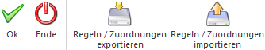

Neben den Vorlagen bietet das Beleg Pro noch diverse weitere Einstellungen, welche über den Menüpunkt…
1 WinLine START
1 Vorlagen
1 Beleg Pro
1 Beleg Pro - Einstellungen
… hinterlegt werden können.

Die Einstellungen sind in die folgenden Register untergliedert, welche in den nachfolgenden Kapiteln detailliert beschrieben werden:
ü Register "Einstellungen"
In dem
Register "Einstellungen" können globale Einstellungen getroffen werden, welche
sich für den gesamten Mandanten auswirken.
ü Register "allgemeine Regeln"
In der
Tabelle "Regeln" des Registers "allgemeine Regeln" können spezifische Regeln für
das Füllen der Buchungs- bzw. Belegvariablen hinterlegt werden
ü Register "zus. Blockfelder"
In dem
Register "zusätzliche Blockfelder" können Variablen für den Buchungsimport bzw.
den Batchbelegeingang definiert werden, welche beim "Block einfügen" (neben den
Standardfeldern) als Variablen mit eingefügt werden.
ü Register "Belegstufen-Zuord."
In
dem Register "Belegstufe-Zuordnung" kann eine Zuordnung zu einer FAKT-Belegstufe
anhand eines bestimmten Textes vorgenommen werden.
ü Register "Rückfall-Artikel"
In der
Tabelle des Registers "Rückfall-Artikel" können Rückfall-Artikel für die
Autovervollständigung eingetragen werden.
Buttons

Ø Ok
Durch die Anwahl des OK-Buttons werden alle Eingaben des gerade aktiven Registers gespeichert.
Ø Ende
Das Fenster "Beleg Pro - Einstellungen" wird geschlossen.
Ø Regeln / Zuordnung exportieren
Durch Anwahl dieses Buttons werden die aktuell eingetragenen Werte des Register allgemeine Regeln bzw. Belegstufen-Zuord. als MPR-Datei gespeichert. Es öffnet sich der Windows-Dateibrowser, wo der Speicherort ausgewählt werden kann.
Ø Regeln / Zuordnung importieren
Durch Anwahl dieses Buttons können zuvor exportiere Werte (MPR-Datei) wieder importiert werden. Es öffnet sich der Windows-Dateibrowser, wo der Speicherort ausgewählt werden kann. Anschließend kommt die Meldung, dass der Import erfolgreich durchgeführt wurde. Wenn jetzt mithilfe des Buttons "OK" gespeichert wird, werden die importierten Werte gespeichert.